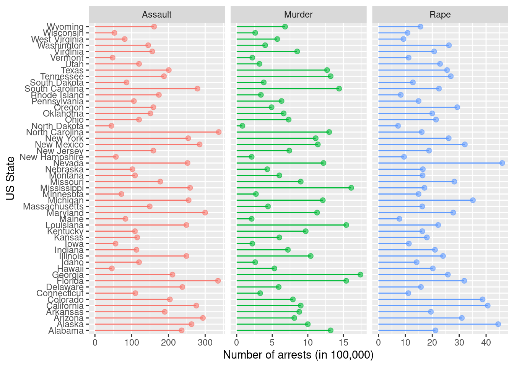

library(tidyverse)1 The pipe operator (%>%)
The cryptic operator %>% in this book is called pipe or chain operator. It’s a simple way to reformat your R scripts to be human readable scripts. I’ll show you how here.
Note
The pipe operator %>% is available from the magrittr package, which can be activated by using the tidyverse package. Hence, you need to call this statement
before you can use the %>% operator.
Since ver 4.1.0, R provides the default |> pipe operator. It’s basically the same function between the two operators with some advantages of using %>%, which I prefer. I write these differences at the end of this chapter.
1.1 What is a pipe or chain operator?
The idea is to simply perform a set of operations where the output of one operation becomes an input of the next operation.
Let’s say you have the following operations:
# --- this code is not running
data <- get_input()
data_1 <- shift_data(data, h=10)
data_2 <- separate_data(data_1, sep="_", sort=TRUE)
print(data_2)
# ---You can write the whole operations to become
# --- this code is not running
print(separate_data(shift_data(get_input(), h=10), sep="_", sort=TRUE))
# ---but this becomes cumbersome and unreadable.
If you examine the operations further, you notice that the first argument of each operation, except the first one, is the output of the previous operation. With the pipe operator %>%, you can rewrite it into
# --- this code is not running
get_input() %>%
shift_data(h=10) %>%
separate_date(sep="_", sort=TRUE) %>%
print()
# ---And the block of operation becomes readable: get the input data, then shift the data by 10, then separate the data by using the character ‘_’ as a separator and sort them, and finally print the result. You don’t even define a variable to capture the results !!.
Note
By the default, the %>% operator will give the input of the left hand side operation into the first argument of the right hand side operation. There is a trick to put which argument you want on the right hand side by using the dot operator. See the later examples.
1.2 Example 1: The Empire Strikes Back
There is a built-in data called starwars from tidyr package, which is part of tidyverse. You are interested to see names of characters that appeared in the famous “The Empire Strikes Back” episode of Star Wars.
glimpse(starwars)Rows: 87
Columns: 14
$ name <chr> "Luke Skywalker", "C-3PO", "R2-D2", "Darth Vader", "Leia Or…
$ height <int> 172, 167, 96, 202, 150, 178, 165, 97, 183, 182, 188, 180, 2…
$ mass <dbl> 77.0, 75.0, 32.0, 136.0, 49.0, 120.0, 75.0, 32.0, 84.0, 77.…
$ hair_color <chr> "blond", NA, NA, "none", "brown", "brown, grey", "brown", N…
$ skin_color <chr> "fair", "gold", "white, blue", "white", "light", "light", "…
$ eye_color <chr> "blue", "yellow", "red", "yellow", "brown", "blue", "blue",…
$ birth_year <dbl> 19.0, 112.0, 33.0, 41.9, 19.0, 52.0, 47.0, NA, 24.0, 57.0, …
$ sex <chr> "male", "none", "none", "male", "female", "male", "female",…
$ gender <chr> "masculine", "masculine", "masculine", "masculine", "femini…
$ homeworld <chr> "Tatooine", "Tatooine", "Naboo", "Tatooine", "Alderaan", "T…
$ species <chr> "Human", "Droid", "Droid", "Human", "Human", "Human", "Huma…
$ films <list> <"A New Hope", "The Empire Strikes Back", "Return of the J…
$ vehicles <list> <"Snowspeeder", "Imperial Speeder Bike">, <>, <>, <>, "Imp…
$ starships <list> <"X-wing", "Imperial shuttle">, <>, <>, "TIE Advanced x1",…1.2.1 Without piping
Let’s work out traditionally without using the pipe operators. To simplify the name of variables, I’ll use the same name of variable for the input/output processes.
# read the data
dt <- starwars
# filter only characters that appeared in "The Empire Strikes Back" movie
dt <- rowwise(dt)
dt <- filter(dt, "The Empire Strikes Back" %in% films)
dt <- ungroup(dt)
# show the name, sex, gender, homeworld and their species only
dt <- select(dt, c(name, sex, gender, homeworld, species))
# print
dt1.2.2 With piping
starwars %>%
rowwise() %>%
filter("The Empire Strikes Back" %in% films) %>%
ungroup() %>%
select(c(name, sex, gender, homeworld, species)) %>%
knitr::kable()| name | sex | gender | homeworld | species |
|---|---|---|---|---|
| Luke Skywalker | male | masculine | Tatooine | Human |
| C-3PO | none | masculine | Tatooine | Droid |
| R2-D2 | none | masculine | Naboo | Droid |
| Darth Vader | male | masculine | Tatooine | Human |
| Leia Organa | female | feminine | Alderaan | Human |
| Obi-Wan Kenobi | male | masculine | Stewjon | Human |
| Chewbacca | male | masculine | Kashyyyk | Wookiee |
| Han Solo | male | masculine | Corellia | Human |
| Wedge Antilles | male | masculine | Corellia | Human |
| Yoda | male | masculine | NA | Yoda’s species |
| Palpatine | male | masculine | Naboo | Human |
| Boba Fett | male | masculine | Kamino | Human |
| IG-88 | none | masculine | NA | Droid |
| Bossk | male | masculine | Trandosha | Trandoshan |
| Lando Calrissian | male | masculine | Socorro | Human |
| Lobot | male | masculine | Bespin | Human |
Note
In the example above, there is statement rowwise() before filtering the rows. This is needed because by default statistical operations are performed column-wise. For example, max(A,B,C) will perform the maximum of columns A, B, and C together.
dt <- data.frame(id=paste("id", c(1:5), sep="_"), A=runif(5), B=runif(5), C=runif(5))
mutate(dt, max=max(A,B,C)) id A B C max
1 id_1 0.7669252 0.1496339 0.4518832 0.9637941
2 id_2 0.4595750 0.7155424 0.5997376 0.9637941
3 id_3 0.5410427 0.8790031 0.9010000 0.9637941
4 id_4 0.8741768 0.7626245 0.2670789 0.9637941
5 id_5 0.2537559 0.9637941 0.6235930 0.9637941Compare to this:
dt %>% rowwise() %>% mutate(max=max(A,B,C)) %>% ungroup()# A tibble: 5 × 5
id A B C max
<chr> <dbl> <dbl> <dbl> <dbl>
1 id_1 0.767 0.150 0.452 0.767
2 id_2 0.460 0.716 0.600 0.716
3 id_3 0.541 0.879 0.901 0.901
4 id_4 0.874 0.763 0.267 0.874
5 id_5 0.254 0.964 0.624 0.964The rowwise() function groups data by rows, and the last ungroup() function removes the grouping.
See more about row-wise and column-wise operation in R.
1.3 Example 2: Piping with gtsummary
There are some packages that are fully compatible with %>% operator. One of them is gtsummary, which provides lots of useful summarisation functions for different tables.
Let’s try to make a summary of the iris table:
library(gtsummary)iris %>%
tbl_summary(by=Species) %>%
add_p() %>%
modify_header(label = "*Morphology*") %>%
modify_spanning_header(all_stat_cols() ~ "**Iris Species N = {N}**")| Morphology | Iris Species N = 150 | p-value2 | ||
|---|---|---|---|---|
| setosa, N = 501 | versicolor, N = 501 | virginica, N = 501 | ||
| Sepal.Length | 5.00 (4.80, 5.20) | 5.90 (5.60, 6.30) | 6.50 (6.23, 6.90) | <0.001 |
| Sepal.Width | 3.40 (3.20, 3.68) | 2.80 (2.53, 3.00) | 3.00 (2.80, 3.18) | <0.001 |
| Petal.Length | 1.50 (1.40, 1.58) | 4.35 (4.00, 4.60) | 5.55 (5.10, 5.88) | <0.001 |
| Petal.Width | 0.20 (0.20, 0.30) | 1.30 (1.20, 1.50) | 2.00 (1.80, 2.30) | <0.001 |
| 1 Median (IQR) | ||||
| 2 Kruskal-Wallis rank sum test | ||||
1.4 Example 3: ggplot2
The package ggplot2 also provide chaining operations by using a different symbol, i.e. + the plus character. Usually it’s intended to add new objects to the canvas. You can combine both pipe operations to create a nice plot For example,
library(ggplot2)USArrests %>%
# make an explicit column for the row names
rownames_to_column("State") %>%
# ignore the UrbanPop column
select(-c(UrbanPop)) %>%
# make a long table
pivot_longer(-c(State), names_to = "Crime", values_to = "Arrests") %>%
# sort by US state
arrange(State) %>%
# give it to ggplot
ggplot(aes(x=State, y=Arrests, color=Crime)) +
# hence the chaining operations in ggplot
facet_wrap(vars(Crime), scales="free_x") +
geom_segment(aes(x=State, xend=State, y=0, yend=Arrests)) +
geom_point(size=2, alpha=0.6) +
coord_flip() +
theme(legend.position="none") +
xlab("US State") +
ylab("Number of arrests (in 100,000)") 
1.5 Differences between %>% and |> operators
The statement:
mtcars %>% filter(gear==5)is equivalent with
mtcars |> filter(gear==5)which is the piping operation for
filter(mtcars, gear==5)There are some advantages of using %>% operator:
It allows you to change the argument placement of the next operation by using the dot operator:
# default is the first argument x %>% f(1,2,3) # equals to f(x,1,2,3) x %>% f(1,.,2,3) # equals to f(1,x,2,3)For the base operator, you must give a named attribute to change the placement:
# default is the first argument x |> f(1,2,3) # equals to f(x,1,2,3) x |> f(1,y=_) # equals to f(1,x)More flexibility with dot operator:
x %>% f(.$var) # equals to f(x, x$var) x %>% {f(.$a, .$b)} # equals to f(x$a, x$b)You can use dot to create a lambda function
f <- . %>% filter(x="abc") fFunctional sequence with the following components: 1. filter(., x = "abc") Use 'functions' to extract the individual functions.